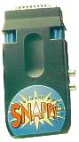
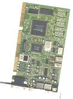

Основные
характеристики
при просмотре телевизионных
программ
• масштабируемое
TV окно
• поддержка
всех VGA разрешений
• более
100 TV каналов
• стереозвук
• возможность
блокировки каналов
• предварительный
просмотр 8 и более каналов одновременно
• автосканирование
• настройка
яркости, контрастности и цветности
• прием
телетекста
при видеозахвате
• запись
в формат .bmp или .avi
• максимальное
разрешение 640х480 или 800х600
Наверх
Фрейм-граббер
позволяет дискретизировать видеосигнал, сохранить отдельный кадр в собственной
памяти, вывести его для просмотра и записать на диск. При просмотре видео
до захвата кадра используется режим "псевдо-реальное видео" с частотой
обычно 2–10 кадров/с. Захват отдельного кадра обеспечивается с разрешением
до 1600х1200 с поддержкой до 16,7 млн цветов. Плата сопровождается программным
обеспечением. Возможны встроенные операции над кадром (редактирование кадра).
Сохранение кадра обеспечивается в стандартных форматах растровой графики.
Наверх
Преобразователь
VGA-TV транслирует цифровой сигнал VGA-изображения в аналоговый сигнал
для вывода на телевизор. Поддерживает распростаненные стандарты телесигнала.
Допускает одновременный вывод изображения на телевизор и монитор.Возможна
регулировка избражения и монтаж (наложение компьютерной графики на внешний
видеосигнал).
Наверх
MPEG-плейер
— это устройство для воспроизведения фильмов, записанных на Video-CD с
качеством VHS.
MPEG
(Motion Picture Expert Group) — это стандарт сжатия цифрового видео и звука.
Стандарт определяет методы компрессии, позволяющие увеличить скорость поступления
аудио- и видеоданных. Коэффициент сжатия данных — 8-10. При чтении скорость
потока данных не превышает 150 кБайт/с. Альтернатива аппаратным декодерам
— программные декомпрессоры в реальном масштабе времени (производитель
– Xing Technology).
Наверх